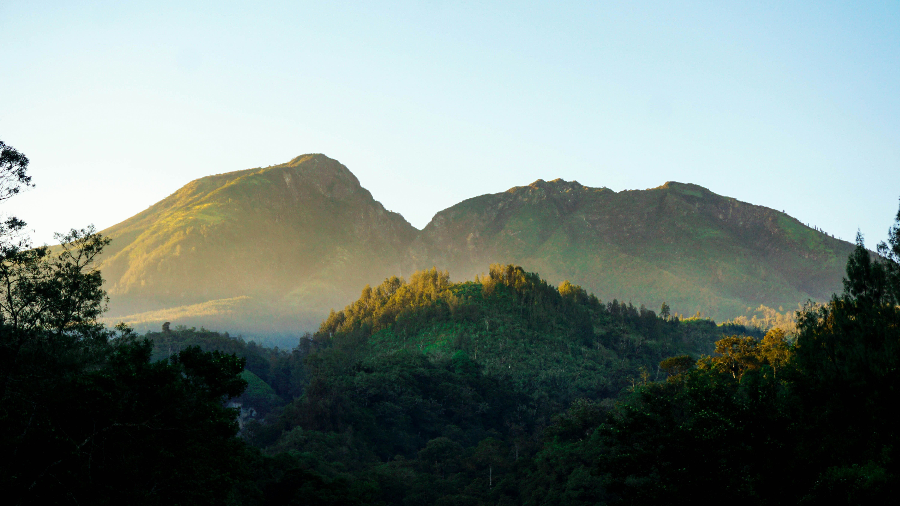

Portal resmi Kecamatan Kedungbanteng. Akses data kependudukan, peta wilayah, dan informasi desa dalam satu genggaman.
Statistik wilayah terbaru tahun 2025.

Kedungbanteng adalah kecamatan strategis di Kabupaten Banyumas yang berbatasan langsung dengan kaki Gunung Slamet di sisi utara.
Sebagai wilayah penyangga Kota Purwokerto, kecamatan ini memiliki potensi ganda sebagai kawasan agraris yang subur sekaligus kawasan pemukiman yang berkembang pesat. Kami berkomitmen mewujudkan pelayanan publik yang transparan.